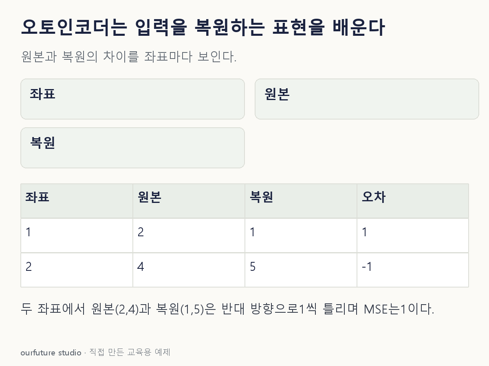

조건을 바꾸며 확인하기
좌표 평균 손실이며 표본 평균과 구분한다. MSE만으로 실제 고장을 확정하거나 탐지성능을 평가하지 않는다.
설명 그림과 비교하기
아래 그림과 표는 고정된 설명 예제입니다. 기본·변형 중 어떤 조건인지 캡션을 읽고, 바꾼 입력의 결과는 계산 칸에서 확인하세요.

같은 문제를 직접 골라 보기
x=(2,4), 복원 x̂=(1,5). 손실은 두 좌표의 평균제곱오차다.
조건을 더 바꾸면?
복원값이 x̂=(2,4)로 바뀌면 MSE는? 이 한 표본으로 이상 탐지 성능을 평가할 수 있는가?
변형 풀이 확인
MSE=0. 이상 탐지 성능은 판단할 수 없다.
해당 입력은 정확히 복원했지만 다른 정상·이상 자료의 점수 분포와 오류율을 확인하지 않았다.
라벨 대신 입력 복원, 오차와 고장은 구별.